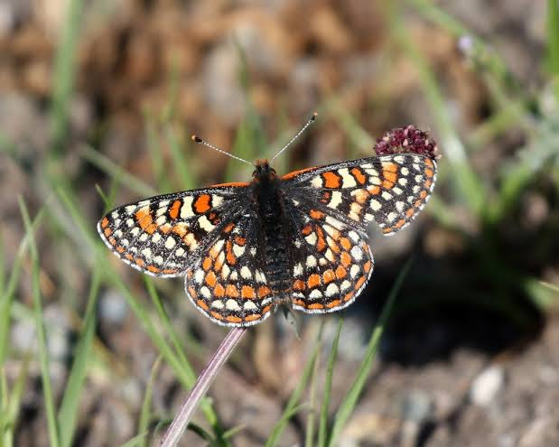
Common Name: Bay Checkerspot butterfly
Scientific Name: Euphydryas editha bayensis
Year listed as endangered: 1987
Reason(s): Host plant loss due to human expansion
Lifespan: About a month
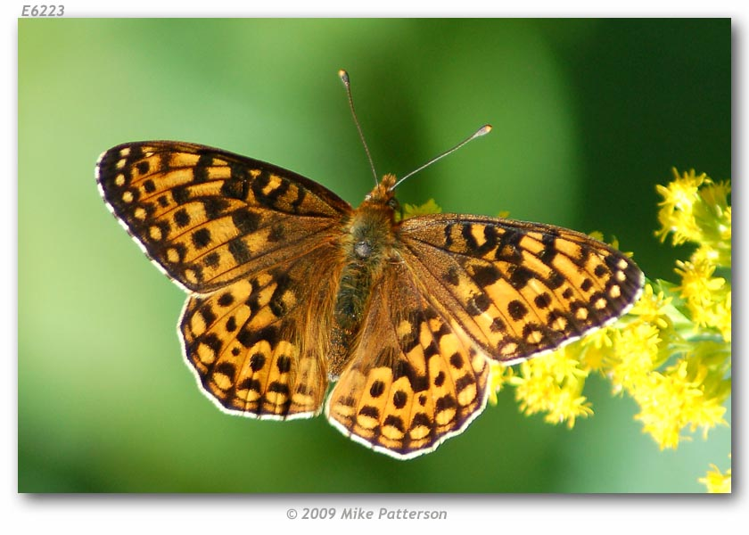
Common Name: Berhen's Silverspot Butterfly
Scientific Name: Speyeria zerene behrensii
Year listed as endangered: 1997
Reason(s): Loss of habitat due to human expansion
Lifespan: Around a year and 3 months
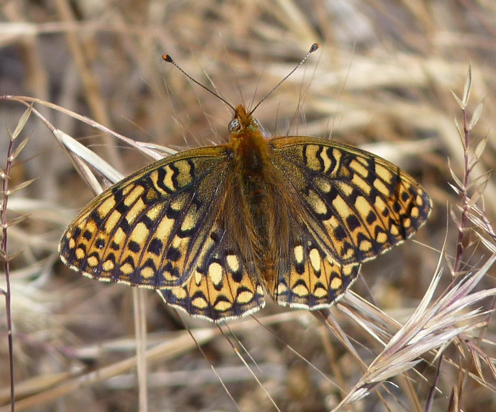
Common Name: Callipe Silverspot Butterfly
Scientific Name: Speyeria callippe callippe
Year listed as endangered: 1997
Reason(s): Host plant loss due to human expansion and cattle consumtion
Lifespan: About 10 months
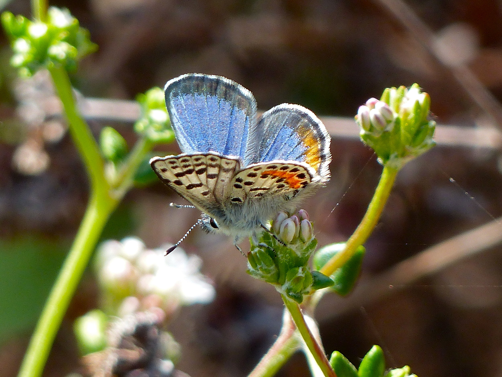
Common Name: El Segundo Blue Butterfly
Scientific Name: Euphilotes battoides allyni
Year listed as endangered: 1976
Reason(s): Loss of habitat due to human expansion
Lifespan: Around a year and 1 month
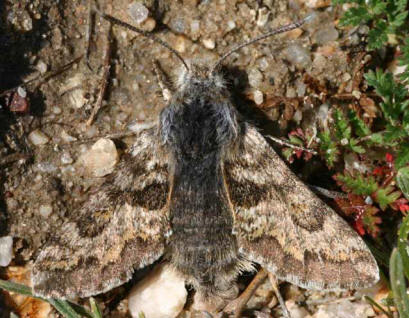
Common Name: Kern Primrose Sphinx Moth
Scientific Name: Euproserpinus euterpe
Year listed as endangered: 1980
Reason(s): Loss of habitat due to human expansion
Lifespan: Unknown due to lack of study
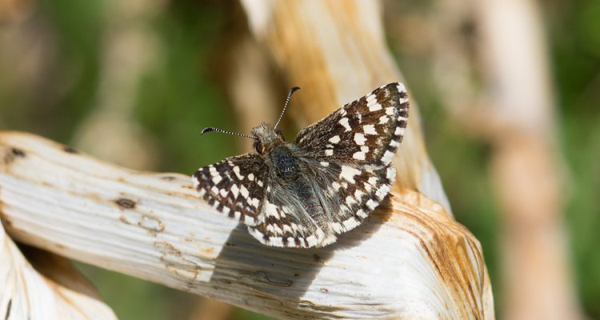
Common Name: Laguna Mountains Skipper
Scientific Name: Pyrgus ruralis lagunae
Year listed as endangered: 1997
Reason(s): Host plant loss due to human expansion
Lifespan: Around 2 years and 2 weeks
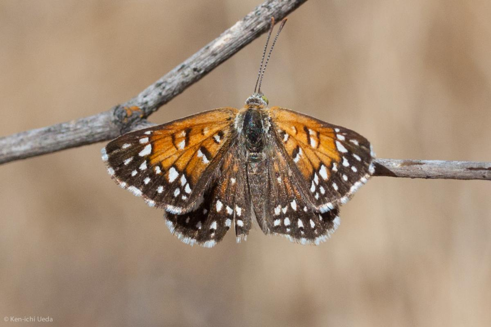
Common Name: Lange's Metalmark Butterfly
Scientific Name: Apodemia mormo langei
Year listed as endangered: 1976
Reason(s): Loss of habitat
Lifespan: Unknown; conflicting sources
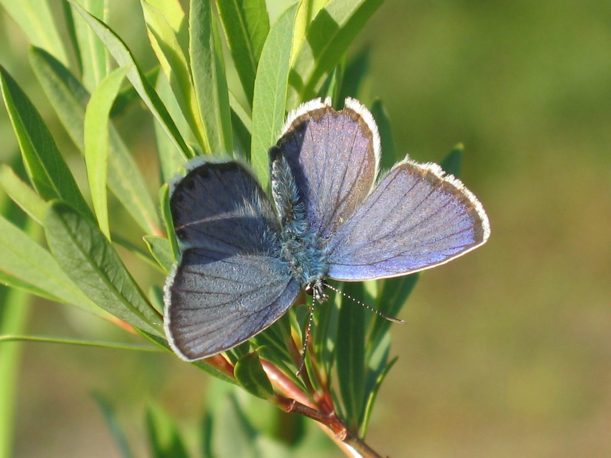
Common Name: Lotis Blue Butterfly
Scientific Name: Plebejus anna lotis
Year listed as endangered: 1976
Reason(s): Loss of habitat due to human expansion and climate change
Lifespan: Unknown due to lack of study
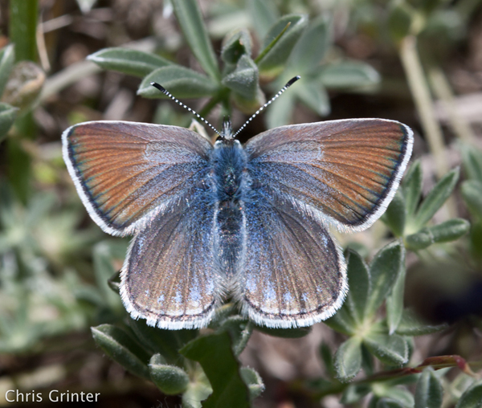
Common Name: Mission Blue Butterfly
Scientific Name: Icaricia icarioides missionensis
Year listed as endangered: 1976
Reason(s): Loss of habitat due to human expansion
Lifespan: About a year and a month
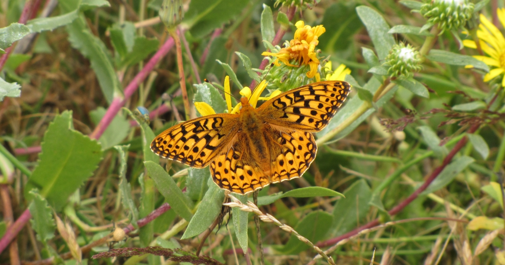
Common Name: Myrtle's Silverspot Butterfly
Scientific Name: Speyeria serene myrtleae
Year listed as endangered: 1992
Reason(s): Loss of habitat due to human expansion
Lifespan: About 9 months
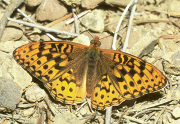
Common Name: Oregon Silverspot Butterfly
Scientific Name: Speyeria zerene hippolyta
Year listed as endangered: 1980
Reason(s): Loss of habitat due to human expansion
Lifespan: About 9 months
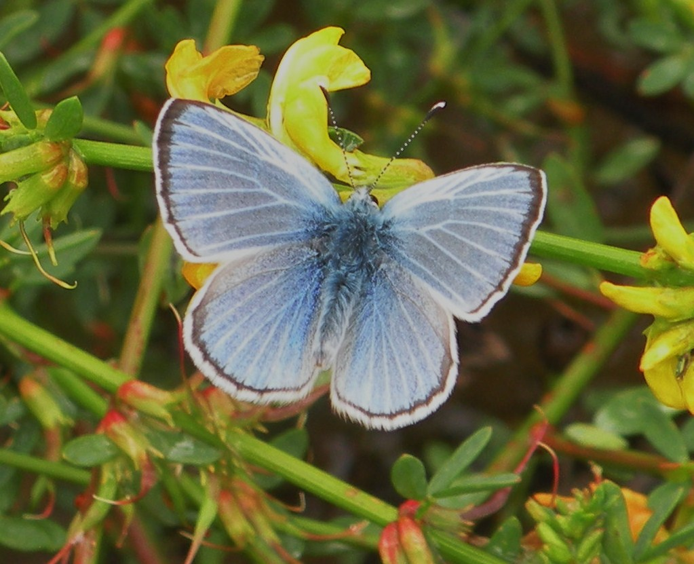
Common Name: Palos Verdes Blue Butterfly
Scientific Name: Glaucopsyche lygdamus palosverdesensis
Year listed as endangered: 1980
Reason(s): Host plant loss due to human expansion
Lifespan: About a year
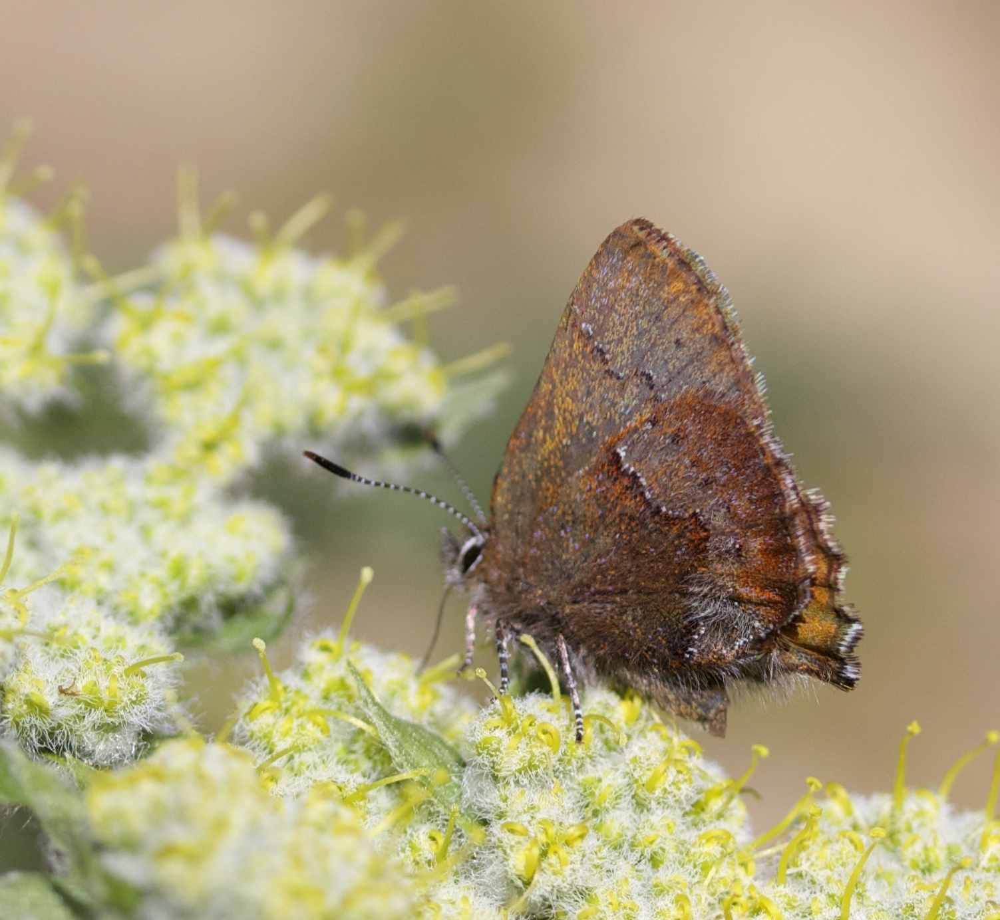
Common Name: San Bruno Elfin Butterfly
Scientific Name: Callophyrs mossil bayensis
Year listed as endangered: 1969
Reason(s): Host plant loss due to human expansion
Lifespan: About a year
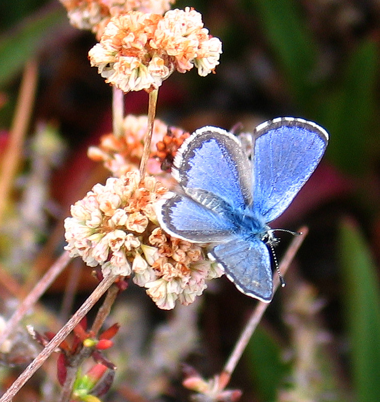
Common Name: Smith's Blue Butterfly
Scientific Name: Euphilotes enoptes smithi
Year listed as endangered: 1976
Reason(s): Host plant loss due to human expansion
Lifespan: About a year
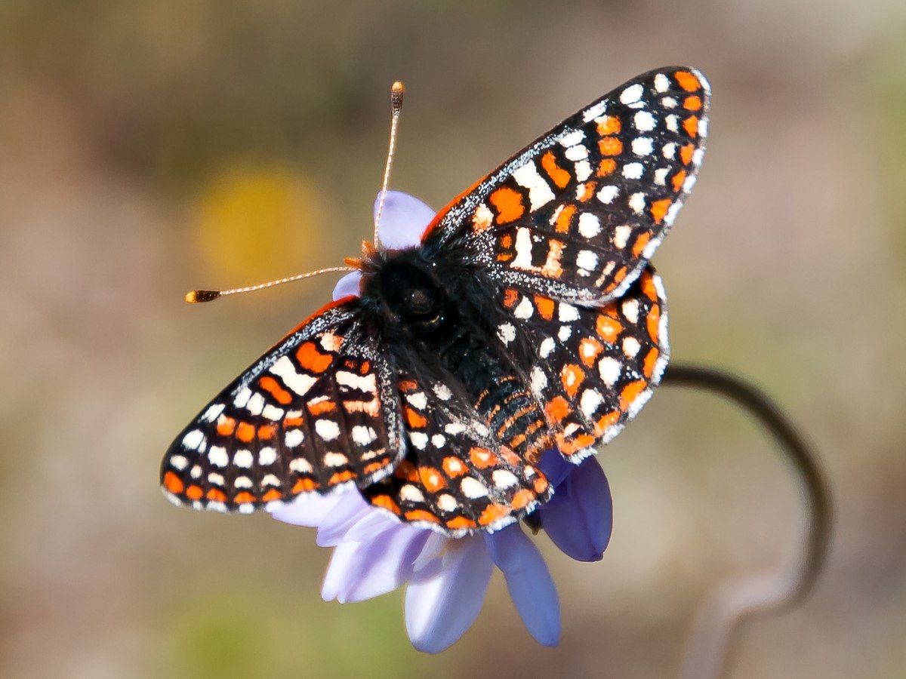
Common Name: Quino Checkerspot Butterfly
Scientific Name: Euphydryas editha quino
Year listed as endangered: 1997
Reason(s): Loss of habitat due to human expansion
Lifespan: About a year